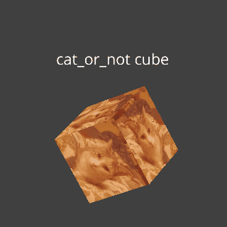

I love programming ...
|
and cats
Click for cat
Projects
rrplug
2023 - now
rrplug is a rust crate that provides a wrapper with clever abstractions around the
northstar plugin system
It is build to provide a safe api using macros and traits.